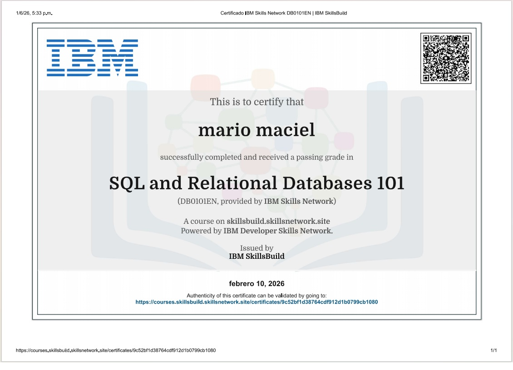
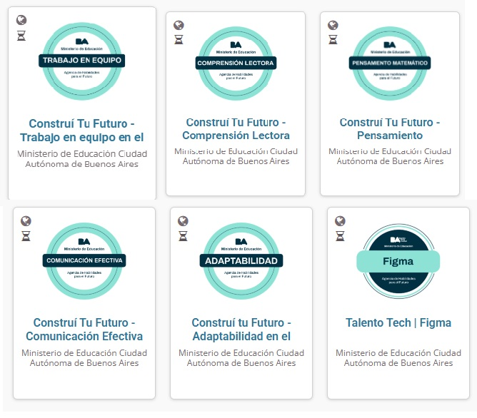

El Impacto Cuantitativo del Idioma y el Título en la Brecha Salarial IT
Análisis de validación de mercado que demuestra mediante rigor inferencial (Pruebas t-Student y Chi-Cuadrado sobre datos de OpenQube/Sysarmy) cómo la fluidez en el idioma inglés y el factor académico determinan las oportunidades de ingresos en el ecosistema tech.
Incremento en la media salarial mensual de profesionales bilingües vs. monolingües.
Prueba t de Student (t = 43.96, p = 3.54e-254). Se rechaza H0 con 99.9% de confianza.
Asociación dependiente directa (p = 1.16e-190) entre inglés fluido y mayores sueldos.
Matriz de Intersección: Educación vs. Idioma
| Perfil del Candidato | Estatus con Inglés Básico / Nulo | Estatus con Inglés Fluido / Avanzado |
|---|---|---|
| Con Título Universitario / Terciario | Competencia Local Saturada: El título supera los filtros ATS, pero queda atrapado en la media salarial local (~$2,42M). | Techo Máximo Corporativo: Perfil codiciado para multinacionales y roles gerenciales con acceso al top de ingresos. |
| Sin Título (Autodidacta / Bootcamps) | Zona de Máxima Exclusión: Doble barrera. El ATS descarta por falta de título y la falta de idioma impide aplicar al exterior. | La Ventana del Talento Real: La falta de título se compensa con portfolio. El idioma permite saltar al mercado exterior (+84.5%). |
Conclusión: Hackeando las dos barreras del mercado
Durante mi trayectoria en logística viví en carne propia el impacto de esta matriz: la visita de un gerente de la casa matriz en Inglaterra paralizó operativamente a un equipo técnico sólido debido, exclusivamente, a la barrera idiomática. Las empresas piden títulos para filtrar CVs en los ATS, pero lo que realmente recompensa el mercado internacional es la capacidad de resolver problemas en tiempo real con el mundo.
Metodología y Fuentes de Respaldo:
- Análisis Inferencial (T-Test y Chi2): Microdatos procesados de la Encuesta de Sueldos de OpenQube.
- Métricas ATS y Credenciales: Estudios de Harvard Business School, Glassdoor Economic Research y SHRM.
Traductor Esp-Eng | Free Spanish-English Translator
Así nació mi nuevo proyecto: Ingleslibre
Traductor Voice-to-Voice en tiempo real
"¿Alguna vez perdiste una oportunidad o sentiste la tensión de no poder comunicarte fluido con el mundo exterior por la barrera del idioma? En mi experiencia dentro de la logística y los datos, viví en carne propia cómo un equipo técnico brillante puede paralizarse ante un cliente o gerente internacional solo por el bloqueo de la lengua. Los datos demuestran que el inglés no es un lujo, sino el acelerador salarial más grande del mercado tecnológico. *Por eso desarrollé este Traductor Voice-to-Voice en tiempo real. No es solo una herramienta de traducción: es una solución de arquitectura ligera pensada para romper con la fricción comunicativa. Construido con un backend asíncrono en FastAPI, motorizado por faster-whisper para una transcripción de alta precisión, empaquetado en contenedores Docker y conectado a una interfaz ágil en web app. Explorá la app, auditá el código y descubrí cómo la tecnología y la ingeniería de datos pueden transformar la comunicación operativa global."
🛠️ ¿Cómo lo construí?
- • FastAPI: Para estructurar un backend asíncrono, rápido y ligero.
- • faster-whisper: Para la transcripción y procesamiento de audio de alta precisión.
- • Docker: Para empaquetar toda la solución y garantizar que corra de forma consistente en cualquier entorno.
- • Web App: Una interfaz simple para interactuar mediante voz.
Mi Especialidad
Soy Analista de Datos con experiencia en logística, abastecimiento y gestión de información. Transformo datos en información útil para la toma de decisiones mediante procesos de limpieza, modelado, análisis y visualización. Me especializo en identificar oportunidades de mejora operativa, optimizar procesos y construir soluciones basadas en datos utilizando SQL, Power BI y herramientas de análisis.
Mis Habilidades
📊 Análisis de Datos
- Exploración y análisis de datos
- Interpretación de indicadores (KPIs)
- Data Analytics orientado a negocio
- Visualización de información
🗄️ Bases de Datos
- SQL
- Consultas y manipulación de datos
- Modelado de datos relacionales
💻 Herramientas y Tecnologías
- Python & Pandas
- Excel
- Git & GitHub
- CSV y procesamiento de datos
🔧 Gestión y Preparación de Datos
- Limpieza y transformación de datos
- Validación y control de calidad
- Normalización y estandarización
- Detección de errores e inconsistencias
- Automatización de procesos de datos
🚚 Logística y Supply Chain
- Gestión de inventarios
- Abastecimiento
- Análisis operativo
- Optimización de procesos
- Indicadores logísticos
Credenciales IBM | IBM Credentials
Certificaciones oficiales obtenidas a través de Credly:
SQL Certification

SQL and Relational Databases 101
Certificación obtenida a través de IBM SkillsBuild. Formación en bases de datos relacionales, consultas SQL, modelado de datos y fundamentos de gestión de bases de datos.
Introduction to Generative Artificial Intelligence

EsencIA sobre introducción a la Inteligencia Artificial Generativa
Certificación obtenida a través de Eidos Global y Google.org. Dimensión Orígenes, Protección de Datos, Dominio del Prompt, Creación de la Eficiencia, Perspectiva del Futuro.
Certificaciones CISCO | Cisco Certifications
Certificaciones oficiales obtenidas a través de Credly
Certificaciones – Ministerio de Educación | Ciudad Autónoma de Buenos Aires
Certificaciones oficiales obtenidas a través de Construí tu Futuro

Certificaciones Microsoft Learn
Formación oficial de Microsoft en Data Analytics, Power BI, Data Modeling, DAX y Microsoft Fabric.Perfil Microsoft Learn
- Nivel: 6
- Experiencia acumulada: 31.950 XP
- Módulos completados: 21
- Learning Paths completados: 5
- Próximo nivel: Nivel 7 (350 XP restantes)
Competencias desarrolladas
Learning Paths destacados
- Get Started with Microsoft Data Analytics
- Prepare Data for Analysis with Power BI
- Work with Semantic Models in Microsoft Fabric
- Power BI Data Modeling
- Microsoft Fabric Analytics
Módulos destacados
- Perform Analytics in Power BI
- Enforce Power BI Model Security
- Visualize Real-Time Data with Azure Stream Analytics and Power BI
- Write DAX Formulas for Semantic Models
- Create DAX Calculations in Semantic Models
- Design Scalable Semantic Models
- Configure a Semantic Model
- Get Data in Power BI
- Clean, Transform and Load Data in Power BI
- Microsoft Fabric Fundamentals
Actualmente avanzando en la ruta oficial de Microsoft para Data Analyst (PL-300).
Credenciales y Logros Oficiales de Microsoft Learn
Proyectos
Laboratorio de Datos Retail | Retail Data Laboratory
Retail Pulse — Plataforma e inteligencia de precios competitivos
Retail Pulse es una plataforma analítica desarrollada en Python diseñada para automatizar el monitoreo de precios, la consolidación de matrices competitivas y la generación de reportes ejecutivos entre las principales cadenas de retail de consumo masivo en Argentina (Carrefour, Coto y Jumbo).
Ver Repositorio del ProyectoLaboratorio de Datos Urbanos | Urban Data Lab
Urban Mining Economics in Argentina | Economía de la minería urbana en Argentina
Desarrollé un estudio de caso completo de análisis de datos utilizando Python, Pandas, Jupyter Notebook y Streamlit para evaluar la rentabilidad del reciclaje urbano de cobre a través del análisis del retorno de la inversión y la modelización económica.
Probar en StreamlitLaboratorio de Datos en Logística | Logistics Data Lab
📊 Evaluación de la Calidad de Datos - Archivo Maestro de Logística
Este proyecto analiza la calidad y exhaustividad de un archivo maestro de datos logísticos utilizado para la gestión de inventarios, almacenamiento y distribución. El objetivo es identificar datos faltantes y medir el impacto de los atributos críticos en la toma de decisiones operativas.
Ver Repositorio del ProyectoLaboratorio de Datos | Data Lab
E-commerce Data Cleaning Challenge
Procesamiento de 5,000 registros con inconsistencias en 100 columnas. Normalización de monedas, fechas y limpieza profunda de texto con Pandas.
Ver RepositorioAnálisis de Quejas por Email – Empresa de Entregas a Domicilio
Generación de dataset de 1,200 emails de quejas. Limpieza de datos, clasificación por tipo de queja y análisis por zona y fecha.
Ver Repositorio